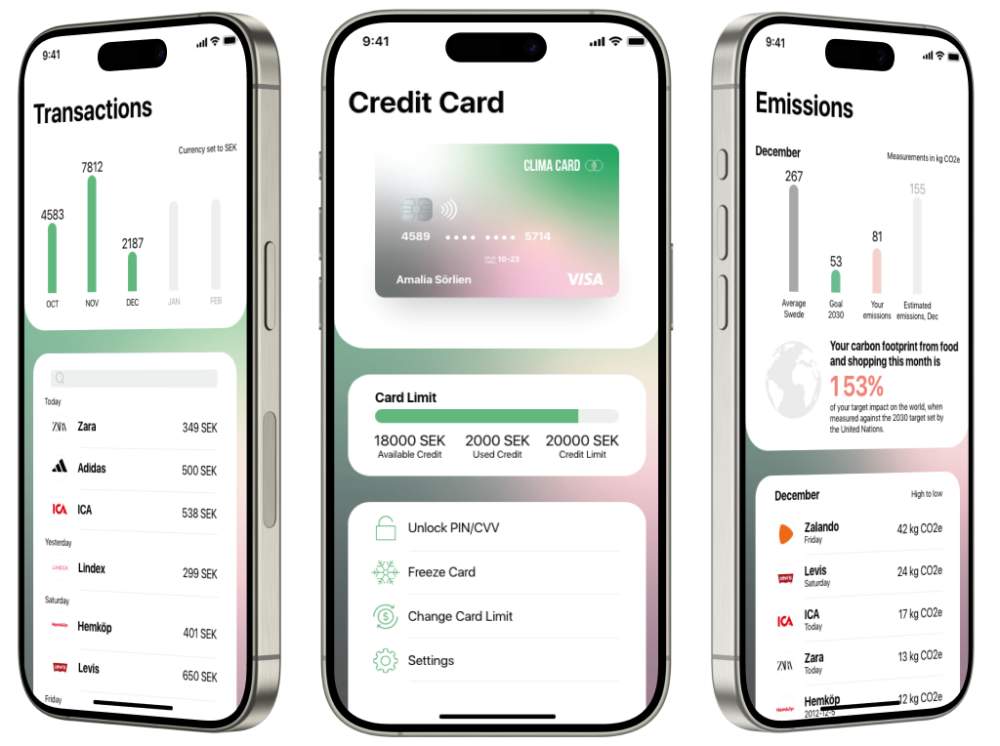
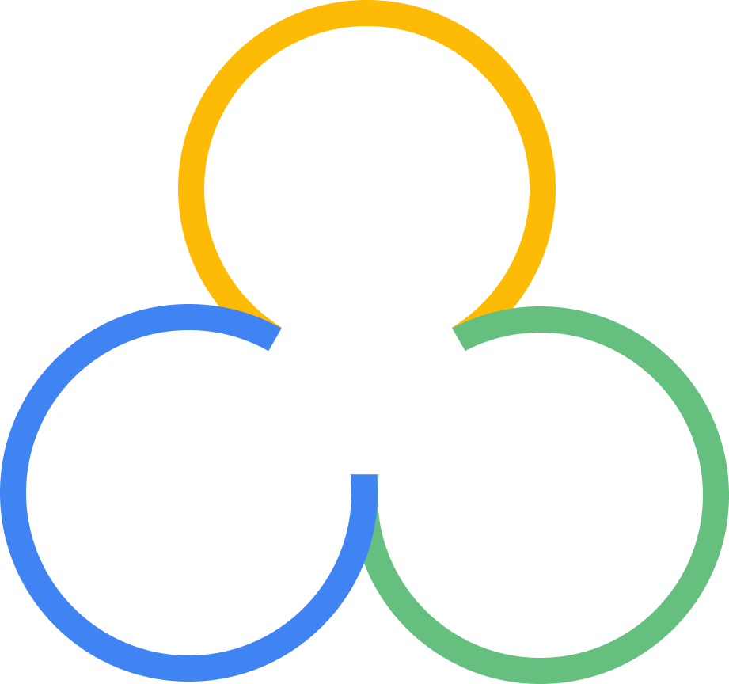
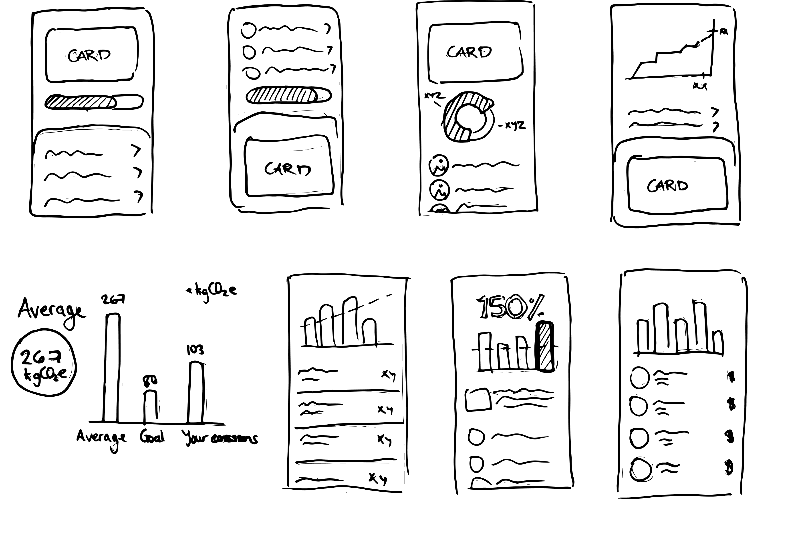
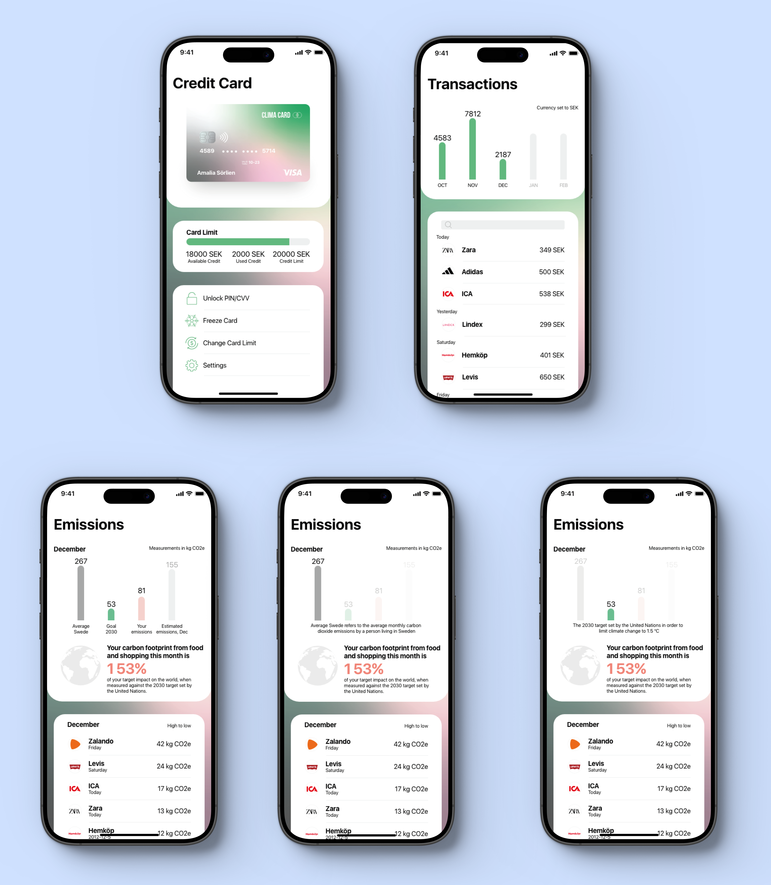
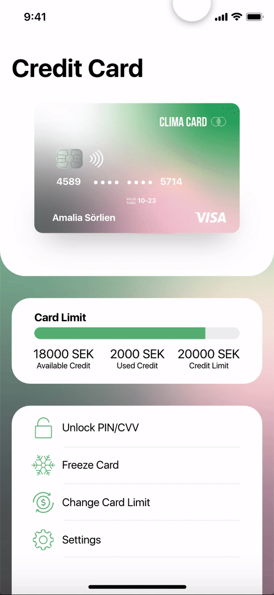

Clima Card
Credit card concept where the users can track their climate impact from private consumption.

Project overview
Challenge
Design a credit card concept that empowers users to understand and reduce their climate impact. The card should make environmental impact data accessible by calculating CO2e for each purchase, allowing users to see how their daily choices add up. The challenge was to create an app that not only tracks consumption but also encourages sustainable habits in line with the UN's 2030 Agenda, specifically Goal 12: "Ensure sustainable consumption and production patterns."
My objectives
- Learn a new tool, in this case Adobe XD.
- Develop a clear, user-friendly interface that visualizes CO2e data for each purchase.
- Provide immediate feedback on climate impact to guide sustainable choices.
- Highlight high-impact purchases to promote awareness and behavior change.
Design process
1 Ideation
Rationale
User research
Delimitations
2 Design
Sketches
Color palette
High-fidelity
3 Prototype
User flow visualization
Feature walkthrough
4 Testing
Evaluate
01 Ideation
Rationale
I wanted to engage in a project that challenged my design skills while addressing the important issue of sustainability. With the ongoing climate crisis, I saw an opportunity to create a concept that helps individuals understand their carbon footprints and encourages more conscious consumer behavior. This project allowed me to explore design solutions while enhancing my proficiency in Adobe XD.
02 Knowledge
To deepen my understanding of Adobe XD as a design tool while exploring an important environmental issue.

01 02 0301 Relevance
The project is relevant because of the ongoing climate crisis.
03 Importance
The project helps individuals understand their climate impact and make more sustainable choices.
User research
According to a report from Naturskyddsföreningen, the emissions from a consumption perspective in Sweden corresponds approximately to 10 tonnes CO2e per capita. This is 80% caused by private consumption and 20% of public consumption. Naturskyddsföreningen states that the private consumption derives from eating, living, traveling and shopping. In this project, I have focused on eating and shopping, combined they make up 40% of the private consumption.
3.2T
CO2e per capita
(10 × 0.8 × 0.4)
267KG
Monthly average
(3.2t ÷ 12)
Through the Paris Agreement, the nations have agreed that the temperature rise of the earth should be kept well below 2 degrees Celsius. In order to fulfill Sweden's commitment in this agreement, Sweden has set a number of goals to reduce its climate emissions. Among other things, we need to reduce consumption-based climate emissions from 10 tonnes per person per year to 2 tonnes by 2030.
640KG
CO2e goal per capita
2030 (2 × 0.8 × 0.4)
53KG
Monthly goal average
(640kg ÷ 12)
Delimitations
The calculations are based on a single source, Naturskyddsföreningen. While using additional sources would have provided more accurate figures, the numbers were considered reliable for the purposes of this project.
I focused specifically on the areas of eating and shopping within private consumption, as these are relatively straightforward to calculate emissions for. The concept is built on the assumption that emission data is readily available for every purchase.
03 Design
Sketches
To kick off the design for the project, I started with a series of hand-drawn sketches. This step allowed me to quickly explore different ideas and visualize potential solutions without getting caught up in the details.
Below, I present a selection of these sketches and demonstrate how I iterated on ideas:

Color palette
When selecting colors for the application, I aimed to incorporate bright hues while maintaining balance and harmony in the interface design. I chose green for its association with nature and added complementary colors like pink and red to enhance the color scheme. To create a cohesive look, I blended all the colors together, ensuring a harmonious visual experience.
High-fidelity
When selecting colors for the application, I aimed to incorporate bright hues while maintaining balance and harmony in the interface design. I chose green for its association with nature and added complementary colors like pink and red to enhance the color scheme. To create a cohesive look, I blended all the colors together, ensuring a harmonious visual experience.

04 Prototype
User flow visualization
To demonstrate the Clima Card user journey, I created a clickable prototype. Below, I have included a GIF showcasing key screens. Building this prototype was essential for testing, as it allowed participants to engage directly with the design and provide valuable feedback.

Test
To gather valuable feedback on the design and concept, I tested the prototype with individuals from various professional backgrounds. This approach provided diverse perspectives on the usability and appeal of the concept. The input I received helped refine the design: texts were adjusted for clarity, colors were updated for better visual impact, and layout changes were made to enhance the overall user experience.
Final thoughts
Working on the Clima Card project was not only a design challenge but also an enriching learning experience. It was fun to deep dive into the area of private consumption and understand its connection to emissions. Additionally, this project provided an opportunity to learn and improve my skills with Adobe XD while developing the concept. Through this process, I combined my curiosity for sustainability with practical design exploration, enhancing both my knowledge and tool proficiency.Later on, I found out that Klarna developed a CO₂e Emissions Tracker, but I take pride in being first with this concept😄